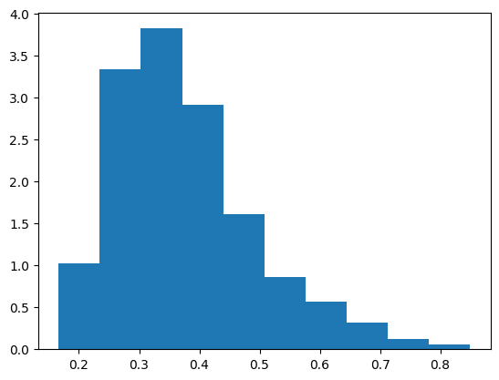
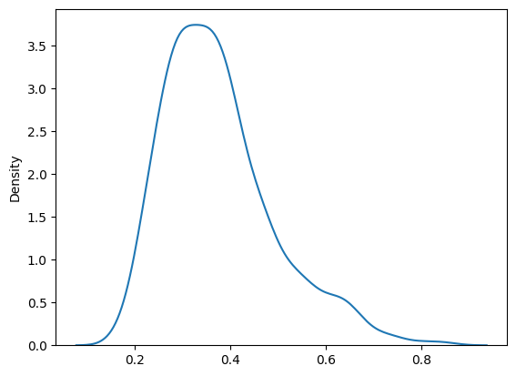
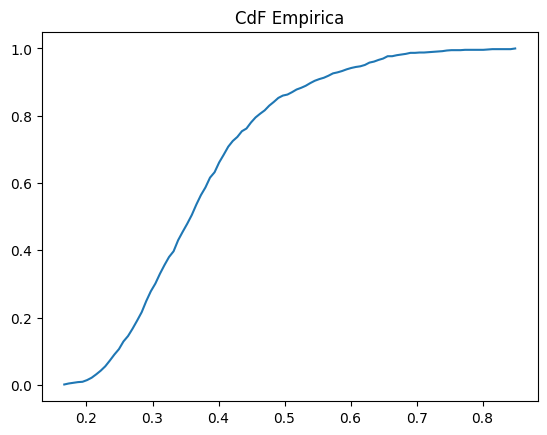
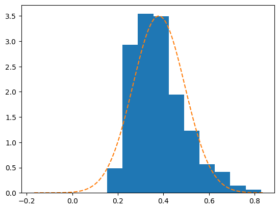

from scipy.stats import dirichlet
import numpy as np
import matplotlib.pyplot as plt
import seaborn as sns01-01: Analisi distribuzione Dirichlet
1.1 Generare un vettore \((X_1, ..., X_n)\) di dimensione \(n=10\) con legge di Dirichlet di parametro α=0.5 (uguale per tutte le componenti). Sia Y il valore massimo delle componenti \(Y=max_i X_i\). Studiare la distribuzione di Y con una simulazione MC. È richiesto di stimarne media e varianza, con intervalli di confidenza, di visualizzare la distribuzione con istogramma, kde, cdf empirica.
Generazione campioni da dirichlet
n_samples = 1000
dim = 10
alpha = [0.5] * dimsamples = dirichlet.rvs(alpha=alpha, size=n_samples)
samples.shape(1000, 10)y = np.max(samples, axis=1)
y.shape(1000,)Stima della media con IC
from scipy.stats import t
import numpy as np
conf = 0.95
alpha = 1 - conf
n = len(y)
mean = np.mean(y)
s = np.std(y, ddof=1) # deviazione standard campionaria
df = n - 1
q = t.ppf(1 - alpha/2, df) # quantile critico t
margin = q * s / np.sqrt(n)
ci_low = mean - margin
ci_high = mean + margin
print(f"IC {conf:.0%} per la media: [{ci_low:.6f}, {ci_high:.6f}]")IC 95% per la media: [0.378259, 0.392966]Stima della varianza con IC
from scipy.stats import chi2
import numpy as np
conf = 0.95
alpha = 1 - conf
n = len(y)
s2 = np.var(y, ddof=1) # varianza campionaria
df = n - 1
q_low = chi2.ppf(alpha/2, df) # quantile basso
q_high = chi2.ppf(1 - alpha/2, df) # quantile alto
ci_low = df * s2 / q_high
ci_high = df * s2 / q_low
print(f"IC {conf:.0%} per la varianza: [{ci_low:.6f}, {ci_high:.6f}]")
print(f"IC {conf:.0%} per la std: [{np.sqrt(ci_low):.6f}, {np.sqrt(ci_high):.6f}]")IC 95% per la varianza: [0.012888, 0.015360]
IC 95% per la std: [0.113525, 0.123936]Confronto grafico con Gaussiana
1.2 Testare se la legge di Y può essere considerata approssimativamente Gaussiana sia graficamente, sia con un test di adattamento.
from scipy.stats import norm
mean = y.mean()
std = y.std(ddof=1)
x_norm = np.linspace(mean + (4*std), mean * (-4*std),n_samples)
y_norm = norm.pdf(x_norm, loc=mean, scale=std)
plt.hist(y, density=True)
plt.plot(x_norm, y_norm, "--")
plt.show()
sns.kdeplot(y)
plt.show()
def ecdf(val, Y_sorted):
return np.sum(Y_sorted <= val) / len(Y_sorted)
y_sorted = sorted(y)
ecdf_x = np.linspace(min(y_sorted), max(y_sorted), 100)
ecdf_y = []
for val in ecdf_x:
ecdf_y.append(ecdf(val, y_sorted))
plt.plot(ecdf_x, ecdf_y)
plt.title("CdF Empirica")
plt.show()
Questo codice costruisce un Q-Q plot (quantile-quantile plot) per confrontare la distribuzione empirica dei dati x con una Normale stimata sugli stessi dati.
All’inizio ordini i dati con np.sort(x): così ottieni i quantili campionari, cioè i valori osservati messi in ordine crescente. Ogni posizione nell’array ordinato corrisponde a un quantile empirico.
Poi costruisci p, che sono le plotting positions. L’espressione (i - 0.5) / n assegna a ciascun punto una probabilità compresa tra 0 e 1, evitando esattamente 0 e 1. Questo serve perché i quantili teorici della normale in 0 e 1 sarebbero ±∞.
Con norm.ppf(p, loc=mean, scale=std) calcoli i quantili teorici della distribuzione Normale con media mean e deviazione standard std, stimati dal campione. In pratica stai chiedendo: “se i dati fossero davvero Normali(mean, std), quali valori mi aspetterei a queste probabilità?”
Nel grafico metti sull’asse x i quantili teorici e sull’asse y quelli campionari. Ogni punto confronta un quantile osservato con il quantile che la normale predirebbe.
La retta y = x è una linea di riferimento: se i punti stanno circa su questa retta, significa che i quantili empirici coincidono con quelli teorici e quindi la normalità è plausibile. Deviazioni sistematiche dalla retta indicano scostamenti dalla normalità (curvatura → code diverse, asimmetria → skewness).
In sintesi: il Q-Q plot è un controllo grafico molto diretto per valutare se i dati possono essere considerati approssimativamente Gaussiani.
y_sorted = np.sort(y) # quantili campionari
p = (np.arange(1, n+1) - 0.5) / n # plotting positions (evita 0 e 1)
q_theory = norm.ppf(p, loc=mean, scale=std) # quantili teorici Normale(mean, std)
mn = min(q_theory[0], y_sorted[0])
mx = max(q_theory[-1], y_sorted[-1])
plt.plot(q_theory, y_sorted, '.', label="Quantili campione vs teorici")
plt.plot([mn, mx], [mn, mx], 'r--', label="y = x (riferimento)")
plt.title("Q-Q plot")
plt.legend()
plt.show()
Confronto con Gaussiana con Test di Adattamento
Qui stiamo applicando un test di adattamento chi-quadro per verificare se la variabile \(Y\) può essere considerata approssimativamente Gaussiana.
Stimiamo media \(\mu\) e deviazione standard \(\sigma\) dal campione e costruiamo una distribuzione normale \(N(\mu, \sigma^2)\). Usando questa normale, dividiamo l’asse reale in \(k = 5\) intervalli equiprobabili sotto l’ipotesi di normalità, calcolando i quantili ai livelli \(1/k, 2/k, \dots\)
Contiamo quante osservazioni cadono in ciascun intervallo: queste sono le frequenze osservate. Se i dati fossero davvero normali, ci aspetteremmo circa \(n/k\) osservazioni in ogni classe: queste sono le frequenze attese.
La statistica chi-quadro misura quanto le frequenze osservate si discostano da quelle attese. Poiché media e varianza sono stimate dai dati, il test usa una correzione dei gradi di libertà (\(ddof = 1\)).
Se il p-value del test è piccolo, rifiutiamo l’ipotesi che \(Y\) segua una distribuzione normale. Se invece è grande, non abbiamo evidenza contro la normalità, in accordo (o meno) con quanto osservato nei grafici.
import numpy as np
from scipy.stats import norm, chisquare
mu = y.mean()
sigma = y.std(ddof=1) # meglio ddof=1 come stima campionaria
k = 5
di = norm(loc=mu, scale=sigma)
# bordi ai quantili 1/k, 2/k, ..., (k-1)/k, con estremi infiniti
edges = di.ppf(np.arange(1, k) / k)
edges = np.r_[-np.inf, edges, np.inf]
obsg, _ = np.histogram(y, bins=edges)
# frequenze attese: n/k per ogni classe (equiprobabili sotto H0 "normale stimata")
n = len(y)
expg = np.full(k, n / k)
statistic, pvalue = chisquare(obsg, f_exp=expg, ddof=2)
print(f"Statistic: {statistic}")
print(f"P-value: {pvalue}")Statistic: 29.149999999999995
P-value: 4.679052587923901e-07